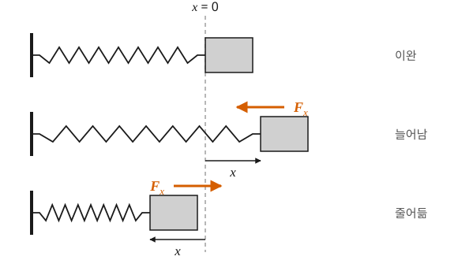

← 목차
용수철 힘이 하는 일 (work done by a spring force)
용수철 힘은
훅의 법칙 (Hooke’s law)
(7.4.2)를 따라 위치마다 크기가 달라진다. 이런 힘이 하는 일은
–
그래프 아래 넓이다 (7.5.4).
(7.4.6)
용수철 힘의 방향은 늘 용수철 끝의 변위와 반대다 (식의 음의 부호).
블록이 이완 위치 (
)에 더 가까워지면
는 양수, 더 멀어지면 음수, 같은 거리면 0이다.
